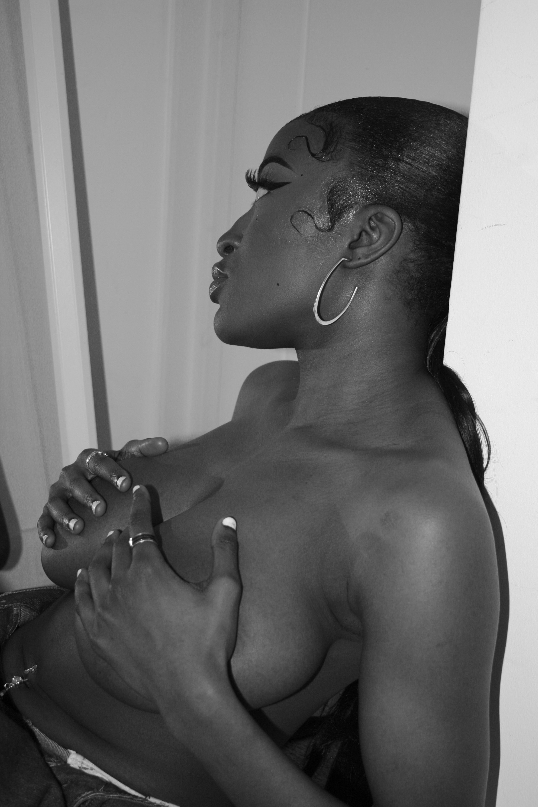
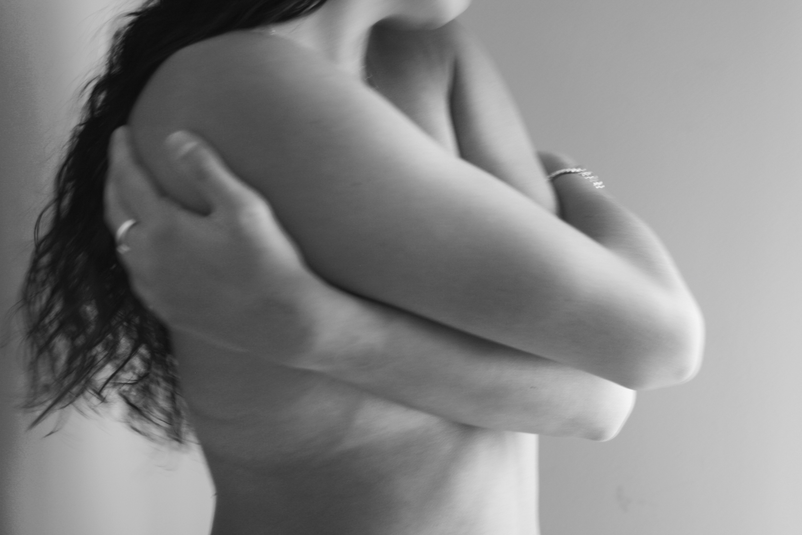
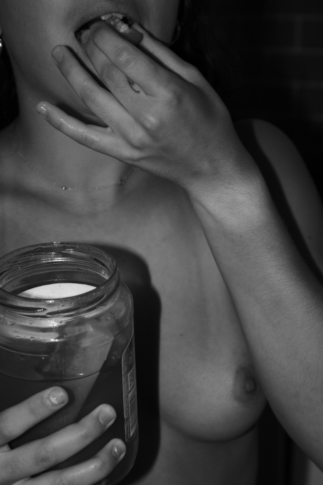
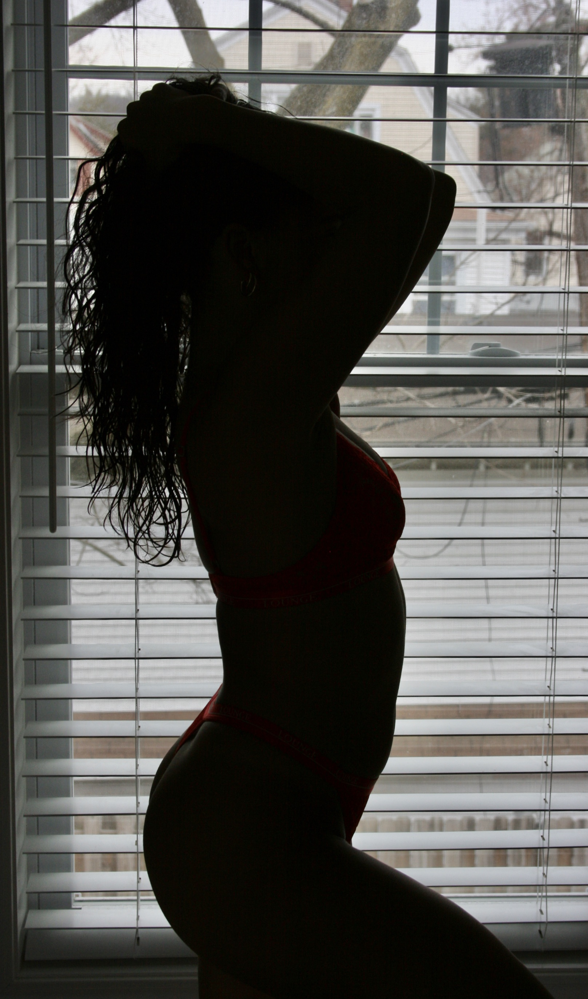
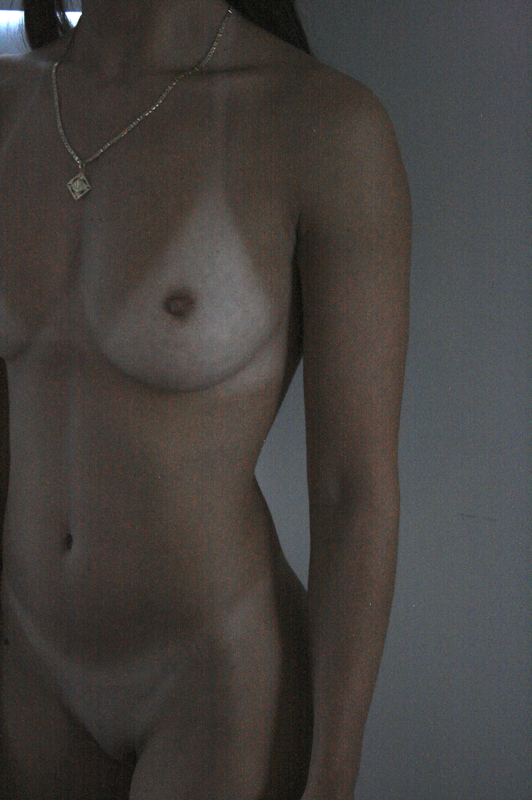

Selected
work.
A collection of moments, places and details. An evolving photographic journal by Ruby.






A collection of moments, places and details. An evolving photographic journal by Ruby.




